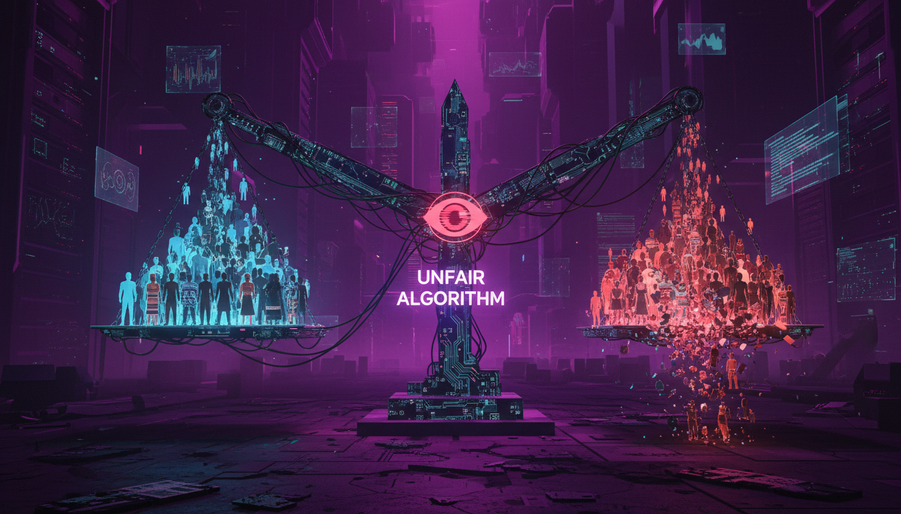

INTEGRITY
NEURAL DEFENSE PROTOCOL v9.0
> START SIMULATION
> VIEW ARCHIVES
SELECT TRAINING MODULE
BACK
◈
FULL SIMULATION
Randomized selection of 20 scenarios from all categories.
👁 IDENTITY FRAUD
Detect deepfakes, face morphing, and synthetic impersonation attempts.
📄 CONTENT THEFT
Identify AI plagiarism, style copying, and unauthorized reproduction.
🎙 VOICE SPOOFING
Recognize synthetic audio, vishing, and voice cloning attacks.

⚖ AI BIAS
Spot algorithmic discrimination in hiring, lending, and policing.
🧠 MISINFORMATION
Filter hallucinations, fake news, and fabricated citations.
MISSION BRIEFING
01. PROTOCOL:
FULL SCAN
02. SCENARIOS:
20
03. OBJECTIVE: Identify threats and select countermeasures.
04. THRESHOLD:
80% ACCURACY
[ ACCESS TERMINAL ]
●
THREAT DETECTION ACTIVE
SECTOR: CORE
1 / 20
TIME REMAINING
Initializing...
SYSTEM SECURED
Integrity: 100%
THREAT REPORT
REBOOT
BREACH DETECTED
Integrity: 45%
REVIEW MISTAKES
REBOOT
THREAT ANALYSIS REPORT
CLOSE & REBOOT
NEURAL ARCHIVE: MISSION LOGS
BACK
ERASE ARCHIVES